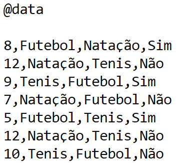

O Weka
Mateus.

O Weka tem como objectivo agregar algoritmos provenientes de diferentes abordagens/paradigmas na sub-área da inteligência artificial dedicada ao estudo de aprendizagem de máquina
Essa sub-área pretende desenvolver algoritmos e técnicas que permitam a um computador "aprender" (no sentido de obter novo conhecimento) quer indutiva quer dedutivamente.
O Weka procede à análise computacional e estatística dos dados fornecidos recorrendo a técnicas de mineração de dados tentando, indutivamente, a partir dos padrões encontrados gerar hipóteses para soluções e no extremos inclusive teorias sobre os dados em questão.
Ele pode ser facilmente instalado clicando aqui
Como criar um arquivo ARFF

Primeiramente, para criar um arquivo ARFF, abra um editor de texto limpo, geralmente já vem instalado no seu sistema operacional, como o bloco de notas do Windows

Use a tag @Relation para definir o nome do arquivo

Para definir o nome do atributo use a tag @Attribute

Para criar elementos com valores dos atributos pré definidos utilize a tag @Data na ordem de criação dos atributos
Clique em salvar como e salve o arquivo como .ARFF, sendo assim, o Weka poderá interpretar seu arquivo
O QUE É CSV
Antes de entrar no passo a passo de como importar e exportar arquivos CSV, é importante entender em que consiste essa sigla.
Por definição, CSV é um formato de arquivo que significa “comma-separated-values” (valores separados por vírgulas)
Isso significa que os campos de dados indicados neste formato normalmente são separados ou delimitados por uma vírgula.
Para entender de uma forma mais prática, vamos supor que você tenha uma planilha que contenha os dados a seguir:

Esses dados poderiam ser lidos em um arquivo CSV separados por vírgulas e por um espaçamento de linha, como no exemplo a seguir:
João,2018,Belo Horizonte
Maria,2019,Rio de Janeiro
Agora que você já entendeu o conceito básico sobre CSV.Agora vou ensinar vocês a criar um arquivo CSV Excel
Como criar um arquivo em CSV no Excel


Após salvar, você pode abrir tranquilamente em um editor de texto ou importar em algum aplicativo.
INTRODUÇÃO DO KNN (K - Nearest Neighbor)
O algoritmo KNN (K Nearest Neighbor) é um dos algoritmos mais utilizados em Machine Learning e também um dos mais simplistas, analisando seu processo de cálculo. Este algoritmo pode ser aplicado em diversos segmentos de negócio, logo também se aplica em diversos problemas como finanças, saúde, ciência política, reconhecimento de imagem e reconhecimento de vídeos. O que acho mais fantástico neste algoritmo é a possibilidade de utilização do mesmo tanto para classificação quanto para regressão. Na classificação a máquina irá dizer a que grupo determinado registro faz parte, dentro obviamente de um contexto de negócio. Já a regressão irá nos fornecer um número/valor, por exemplo o valor de mercado de uma determinada casa que irá ser colocada a venda. Para ambos os casos o algoritmo irá analisar diversas features (Colunas com dados, as quais geraram informação).
O QUE É KNN
O KNN é um algoritmo não pramétrico, aonde a estrutura do modelo será determinada pelo dataset utilizado. Este algoritmo também é conhecido como de aprendizado lento ou melhor dizendo, é um algoritmo preguiçoso, o termo certo é “lazy”. Os algoritmos do tipo lazy, não necessitam de dados de treinamento para se gerar o modelo, o que diminui em partes o processo inicial, mas em contrapartida gerará uma necessidade de analise posterior mais apurada. No caso de algoritmos que não necessitam de treinamento, todos os dados obtidos no dataset serão utilizados na fase de teste, resultando em um treinamento muito rápido e em um teste e validação lentos, momento o qual necessitamos estar bem atentos aos resultados gerados.
Como funciona o algoritmo KNN?
Neste algoritmo possuímos uma variável chamada de K, a qual é parte do nome do modelo e também o principal parâmetro a ser selecionado. Este parâmetro direcionará a quantidade de vizinhos (neighborn em inglês). Em casos de modelos binários, aonde possuímos apenas duas classes, em geral aplicasse valores ímpares a K, mas lembre que cada caso é um caso, “No free lunch”. Imagine que temos um valor P1 o qual queremos predizer, entre um grupo de duas classes aonde o valor atribuído a K foi 1 (K=1), primeiro iremos identificar o ponto mais próximo a ele e depois qual a label que o identifica (classe A por exemplo)

Como Avaliar o KNN
A KNN faz previsões usando o conjunto de dados de treinamento diretamente
As previsões são feitas para uma nova instância (x) pesquisando todo o conjunto de treinamento para as K instâncias mais semelhantes (os vizinhos) e resumindo a variável de saída para essas instâncias de K. Para a regressão, essa pode ser a variável de saída média; na classificação, esse pode ser o valor de classe do modo (ou mais comum).
Para determinar quais das instâncias do K no conjunto de dados de treinamento são mais semelhantes a uma nova entrada, uma medida de distância é usada. Para variáveis de entrada de valor real, a medida de distância mais popular é a distância euclidiana .
A distância euclidiana é calculada como a raiz quadrada da soma das diferenças quadráticas entre um novo ponto (x) e um ponto existente (xi) em todos os atributos de entrada j.
Distância Euclidiana (x, xi) = sqrt (soma ((xj – xij) ^ 2)).
Para que serve o KNN (K Nearest Neighbor)
- O KNN pode ser usado para problemas de regressão e classificação.
- A ideia principal do KNN é determinar o rótulo de classificação de uma amostra baseado nas amostras vizinhas advindas de um conjunto de treinamento